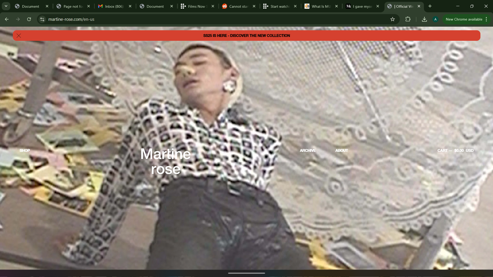
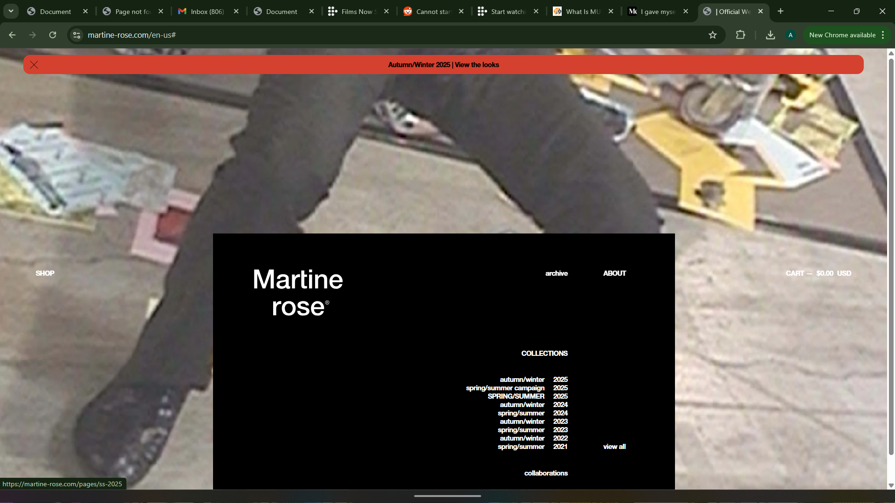

Websites that I find, innovative, expressive and well designed
Martine rose is a british menswear fashion brand out of london that focuses on creating a perflect blend of high fashion and streetwear. Martine is an artist who wears her Jamaican-british on her sleeves and emphasis self expression, not just for herself and brand but all who wear her clothes. She designs for all and shows that through the range in her pieces, the selection of her modals as well the subject of this discussion, her website.
 
Throughout my last two blogs, and my web design process. I speak on the idea of creating a world for users to visit, and using visuals and good spacing to allow for when users do open my website to experience they are launched straight into that world. This website is why I'm so stuck on that concept, the background visuals are not explained no giving small captions that description when or why they were taken or even put on the website in the first place. This creates a sense that this world existed before you came here and it will exist and change after. Matter of fact these images changed from the first time I checked this website for inspiration, and not in a way that they are randomized for every visit to the, more so in a sense that an event has happened for the organization of Martine rose, an event that called for the images to change. That sort of real world effect is what I hope to have for my website, letting users know that, my art, my brand will change weather you're watching or not. This theme is littered all throughout the site and its a characteristic I want to have in mine.
This could all just be lazy web design and I just don't have the eyes or knowledge on the subject to tell. As said before a lot of this website does not follow rules of web design, fonts disappear into visuals, the homebar navigation tool is occasionally buggy and the spacing in the home page isn't balanced well. The site has its flaws that can sometimes get in the way of navigating it. This is an issue I hope to address in my site, a goal of mine is to achieve a distinct look and world to my site while the websites functionality and fluid lie at its foundation.